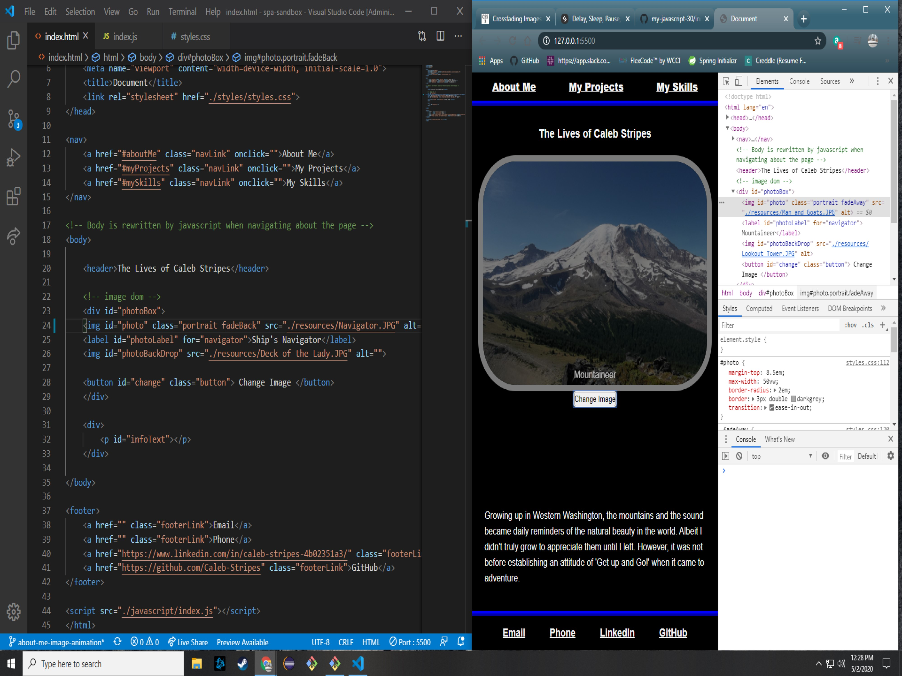
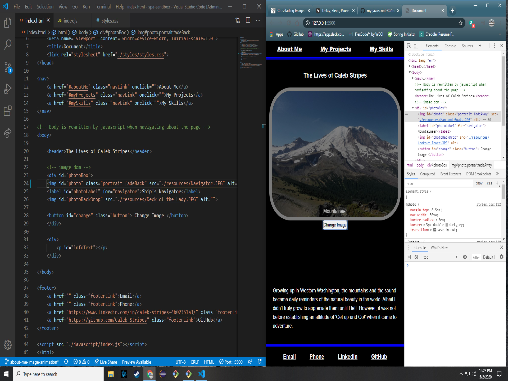

Software Development has always been something I have been interested in. This journey has been unlike any other journey I have had, I am able to bring the same mentality to challenges faced but the solutions and problem solving tactics are completely new. Development is so rewarding, I find it a great outlet for my creativity and logical practice.